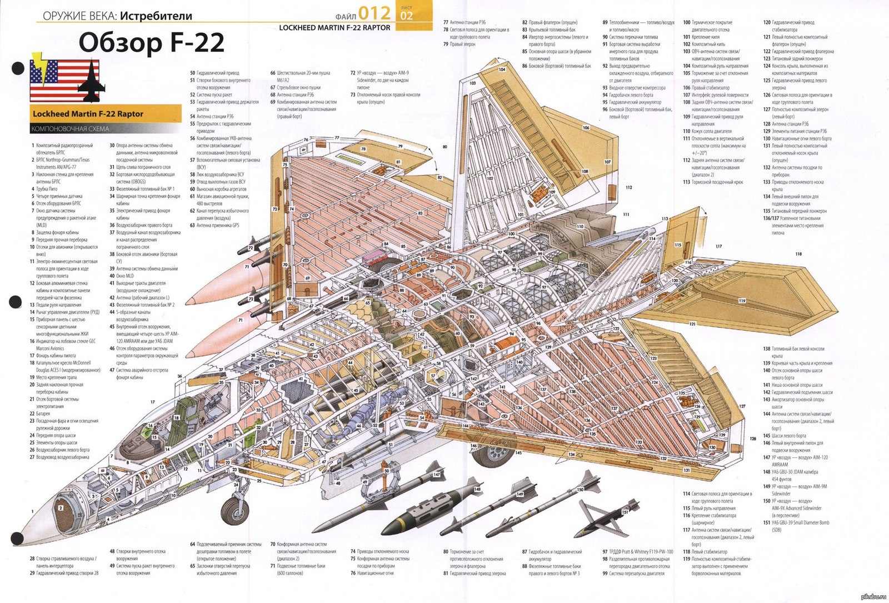

Після початку поточного виробництва літака компанія Lockheed відповідає за складання й озброєння F-22, тоді як компанія Boeing виробляє крила, дизайн фюзеляжу, радіоелектроніку і повністю відповідає за системи обслуговування і тренування. Реалізація програми зі створення F-22 почалася в 1983 році. Перший політ на винищувачі було здійснено 19 листопада 1990 року, в 2001 році почався серійний випуск F-22. З грудня 2005 року винищувач став поступати на озброєння у ВПС США. 29 березня 2022 року стало відомо, що F-22 найімовірніше розділить долю ще одного «мегапроєкту» Пентагону, першого серійного «стелса» F-117 Nighthawk, повністю списаного в 2008 році. Основним конкурентом F-22 розглядається F-15EX Eagle II.
Крило — кесонне. По всьому розмаху крила є носок, що відхиляється. Флаперони займають більше половини розмаху. Нижня поверхня фюзеляжу пласка. Є центральний вантажний відсік; ще два відсіки малого об'єму для розміщення ракет класу «повітря — повітря» малої дальності розміщені з боків фюзеляжу, безпосередньо за повітрозабірником. Кабіна пілота має безрамний ліхтар з радіорозсіювальним напиленням і обладнана модифікованим кріслом катапульти ACTS II. Ліхтар зроблений з прозорого полікарбонату. Форма скління виключає візуальні спотворення, оскільки має мінімальне число поверхонь подвійної кривизни. Вертикальне оперення — двокілеве; кілі нахилені назовні на кут 28 градусів і забезпечені кермом напряму. Горизонтальне оперення — суцільноповоротне, кути стрілоподібності відповідають кутам стрілоподібності крила. Шасі — триопорне, з носовим колесом. «Скляний кокпіт» винищувача Кабіна пілота обладнана ширококутним індикатором на лобовому склі з полем огляду 20х30 градусів, на який виводиться польотна, навігаційна і прицільна інформація, а також інформація від об'єднаної системи упізнавання, зв'язку і системи радіоелектронного придушення (РЕП).
У режимі повітря-повітря:
у головному відсіку (під фюзеляжем): 6 керованих ракет (КР) повітря-повітря AIM-120C AMRAAM. в бічних: по 1 КР повітря-повітря AIM-9 SidewinderУ режимі повітря-земля:
у головному відсіку (під фюзеляжем): 2 КР повітря-повітря AIM-120C AMRAAM і 2 керовані 450-кг бомби GBU-32 JDAM у бічних: по 1 КР повітря-повітря AIM-9 SidewinderВ ролі літака завоювання переваги в повітрі:
у головному відсіку (під фюзеляжем): 6 КР повітря-повітря AIM-120C AMRAAM. і в бічних: по 1 КР повітря-повітря AIM-9 Sidewinder на 4 зовнішніх вузлах: 4 AIM-120C AMRAAM і 2 2271 л ППБВ ролі дальнього винищувача:
у головному відсіку (під фюзеляжем): 6 КР повітря-повітря AIM-120C AMRAAM. в бічних: по 1 КР повітря-повітря AIM-9 Sidewinder на 4 зовнішніх вузлах: 8 AIM-120C AMRAAM і 4 2271 л ППБ